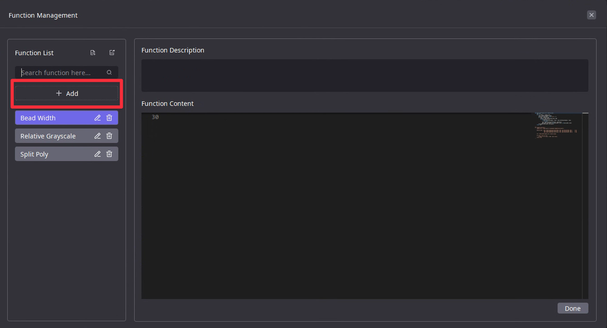
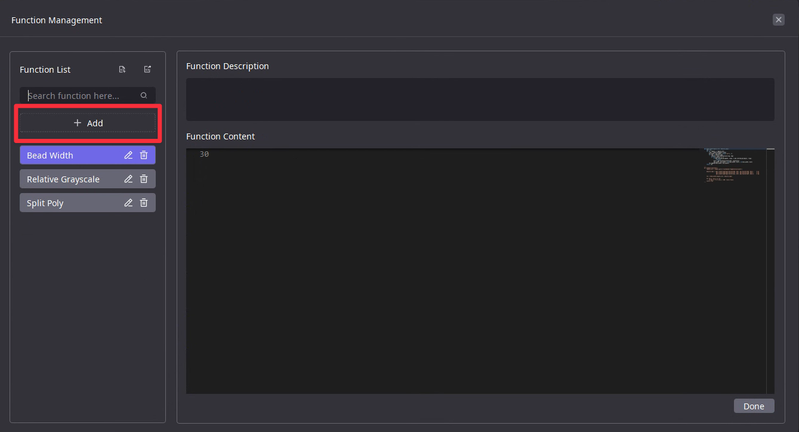

腳本編輯器入門指南#
函數範本#
函數範本功能说明#
AIDI腳本編輯器提供了一些常用的輔助函數，可以直接插入腳本作為函數範本使用。同時提供了函數範本管理功能，讓用戶可以將常用函數封裝為範本，在後續腳本編輯中進行重複使用。内建函數範本請参考 內建函數範本使用说明
如何查看現有的函數範本#
點擊右上角的“函數範本管理”按鈕，即可打開函數範本管理介面，左側列表中顯示現有的函數範本清單。
自定義函數範本#
 

腳本編輯器-右上角函數範本管理
新增-輸入函數別名-輸入函數描述-輸入編輯後的函數內容-點擊註冊
註冊檢查：函數名稱不得重複，不能是單一函數，也不能有其他未知的無法運行的原因。如不符合前述要求，需要進行修改並重新註冊(如果想暫時跳過註冊檢查到下一步，可以使用Ctrl+Z恢復到初始狀態，或者將當前所有函數內容註釋掉)
批量匯出-批量匯入函數範本#
AIDI支持將函數範本批量匯出，然後在其他機器上進行匯入，以實現多人共享函數範本。

腳本編輯器-右上角函數範本管理
選擇“函數列表”旁邊的函數匯出標籤-選擇匯出路徑-完成批量匯出
在任何需要導入的AIDI專案的綜合判定節點，選擇“函數列表”旁邊的函數匯入標籤-批量選擇函數所在地址-完成批量匯入（函數匯入將進行函數別名、函數名稱去重）-完成批量匯入
如何將函數範本插入腳本編輯區#
選擇要插入函數範本的腳本編輯區的代碼行，輸入``templ.``，腳本編輯器會列出所有函數範本，然後選擇需要插入的函數範本即可直接插入。
用戶變數#
用戶變數功能说明#
AIDI模型匯出後，為了方便二次開發時修改腳本變量，建議用戶使用用戶變數來管理所有可能需要設置的變數，而不是直接將它們寫入腳本代碼中。目前用戶變數僅支持數字、字符串和bool類型。
如何設定用戶變數#
點擊左側用戶變數設置區域中的「新增用戶變數」，然後設定其數值。
如何在腳本中使用用戶變數#
用戶變數儲存在全局變數 VFLOW_USER_VARS 中， VFLOW_USER_VARS 是一個python dict。假設想訪問名為 var0 的用戶變量，可以在腳本中直接使用 VFLOW_USER_VARS["var0"] 進行訪問。
便捷debugging#
AIDI腳本支持通過``print``函數將變數直接列印到日誌區域，並可直接在左下角的腳本日誌區域查看。